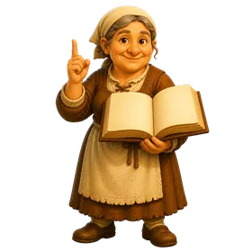
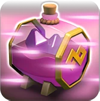
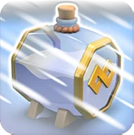
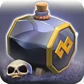

Clan Capital Spells
Updated: 26 August 2026 · By the Goblins Farm team

All 7 Clan Capital spells, with the effect each level gives.
Capital Spells

Endless Haste Spell4 levels
Frost Spell5 levels
Graveyard Spell4 levels Healing Spell5 levels
Healing Spell5 levels
 Jump Spell5 levels
Jump Spell5 levels
 Lightning Spell5 levels
Lightning Spell5 levels
 Rage Spell5 levels
Rage Spell5 levels
Goblins Farm is not affiliated with, endorsed by, sponsored by, or specifically approved by Supercell. Clash of Clans is a trademark of Supercell Oy. This material is unofficial fan content produced under Supercell's Fan Content Policy. Game values change with every update; always verify in-game before committing an upgrade.